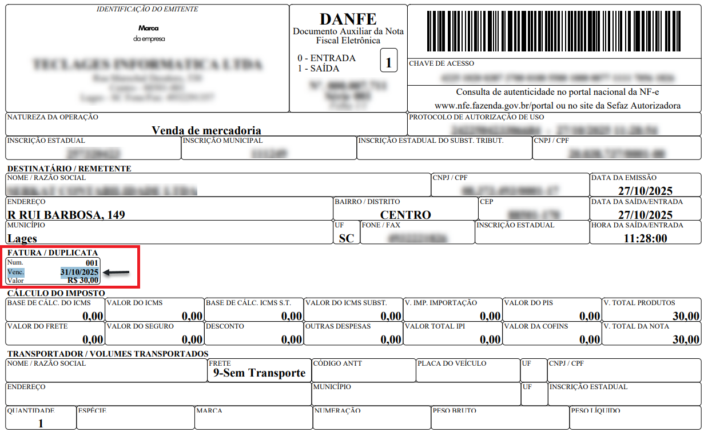

Guia de Prazos do Consumidor
Este guia rápido foi criado com base nas regras do CDC para ajudar você a entender o tempo limite para reclamar de defeitos em compras.
| Tipo de Produto | Garantia Legal | Prazo para Reclamar |
|---|---|---|
| Eletrônicos e Eletrodomésticos | 90 dias | 30 dias após notar o defeito |
| Alimentos e Perecíveis | 30 dias | Imediatamente (produto estragado) |
| Serviços (Reformas, Oficinas) | 90 dias | 30 dias após o fim do serviço |
| Atenção: A garantia legal obrigatória se soma à garantia de fábrica oferecida pela loja! | ||

Nível de risco de comprar sem Nota Fiscal:
Como funciona o Direito de Arrependimento?
De acordo com o Artigo 49 do Código de Defesa do Consumidor, para qualquer compra realizada fora do estabelecimento comercial (como pela internet, telefone ou catálogo), o consumidor tem o prazo de 7 dias corridos, a contar do recebimento do produto, para desistir da compra. O reembolso deve ser total, incluindo o valor do frete, sem a necessidade de explicar o motivo do cancelamento.
Você acessou 33,3% do conteúdo desse site:
33,3 %